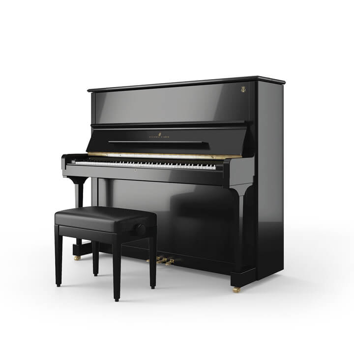
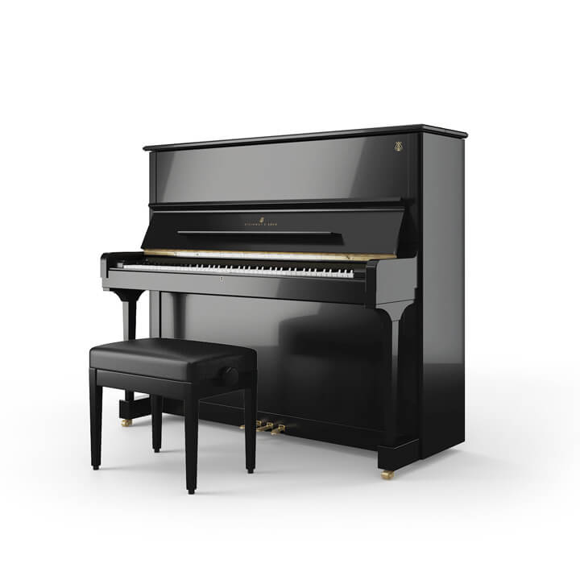

De piano is een slag-, toets- en snaarinstrument. Het komt uit de citerfamilie dat bespeeld wordt met een enkel klavier en twee of drie pedalen. De piano heeft grote witte en kleine zwarte toetsen. Bij de voorloper, de klavecimbel, was dat omgekeerd. De moderne piano is voortgekomen uit de fortepiano, dat is de piano waar onder andere Mozart al zijn muziek op gecomponeerd heeft. Pianoforte betekent in het Italiaans letterlijk zacht (en) sterk. Elke toon kan afzonderlijk zowel luid als zacht gespeeld worden. Dat hangt af van de wijze van spelen. De piano is uitgevonden tussen 1698 en 1709 door Bartolomeo Cristofori in Florence en heette toen Gravicembalo col piano'e forte. De eerste Duitse pianobouwer was Silbermann. De pedaal is een uitvinding van Broadwood in 1783. Sindsdien heeft elke piano twee of drie pedalen.
Op deze website vind je informatie over de verschillende soorten piano's die er bestaan.